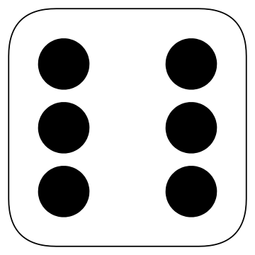
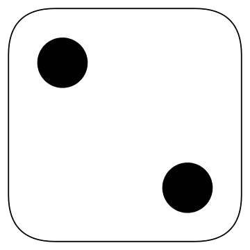
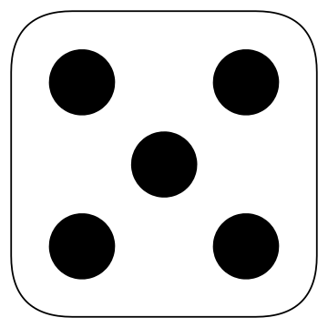
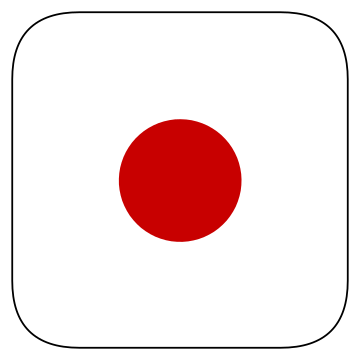
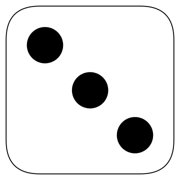
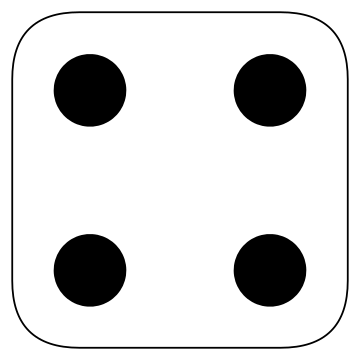

ヨット
ゲームスタート！ 1Pのターンです。0 / 3 回目
ルール
サイコロを３回振って手役を作ろう！
表がすべて埋まったときに点数が高い人の勝ち！
手順
-
ダイスロール！でサイコロを振る
最初の１回目は運試し！サイコロを５個振ろう！
-
キープするサイコロを決める
振り終わったサイコロをクリックすると、その出目をキープすることができるよ！
またキープしたサイコロをクリックすると、キープを解除することもできる。
キープしなかったサイコロを振り直して、より強い手役を作ろう！
振り直しは２回まで！振り直すごとにキープ／キープ解除ができるよ。 -
スコア表を埋める
２回振り直すか、強い手役ができ上がったらスコア表のマスをクリックしてスコアを埋めよう！
もし手役ができなくても、必ずどこか１つは埋めなくてはいけないぞ！
マスを１つ埋めたら、次の人に交代しよう。 -
１～３を繰り返す
スコア表のマスがすべて埋まるまで、これをくり返そう！
表が埋まったとき、合計点数が一番高かった人が勝ち！
手役
※クリックすると詳細が開きます。-
1 ～ 6
-
対応する数字の出目の数によって点数が決まる。
（対応する数字） × （出たサイコロの数） 点。
例：出目３が２つ出た場合は 3 × 2 = 6 点 -
ボーナス
-
1 ～ 6 の手役の合計点数が63点以上になると成立。
常に 35 点。
※３個以上同じ出目を出してスコアを埋めると、合計63点になります。 -
チョイス
-
サイコロ5個の、どんな出目でも成立。
全ての出目の合計が点数になる。 -
フォーダイス
-
例：  ＋好きな出目
サイコロ４個の出目が同じだったら成立。残りの１個はなんでも良い。
全ての出目の合計が点数になる。 -
フルハウス
-
例：  
ペア（同じ出目2個）とスリーダイス（同じ出目3個）の組み合わせを作ったら成立。
全ての出目の合計が点数になる。 -
S・ストレート
-
例：    ＋好きな出目
サイコロ４個の出目が連続したら成立。残りの一つはなんでも良い。
常に 15 点。
※１と６は連続とみなしません。 -
B・ストレート
-
例：
サイコロ５個の出目が連続したら成立。
常に 30 点。
※１と６は連続とみなしません。 -
ヨット
-
例：
サイコロ５個の出目がそろったら成立。
常に 50 点。